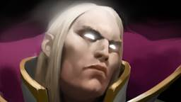
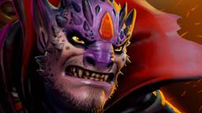
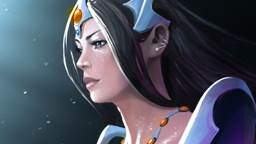
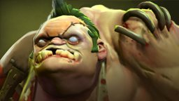

Click Heroes to redirect
Faceless Void

Invoker
Lion
Mirana
Pudge

Faceless Void
A versatile carry hero in Dota 2 known for his exceptional ability to control and manipulate time on the battlefield. Faceless Void is good against heroes with channeling abilities or those heavily reliant on positioning. Heroes like Enigma, Crystal Maiden, and Witch Doctor, whose effectiveness hinges on staying in one place during teamfights, find themselves particularly vulnerable within the confines of Chronosphere. Additionally, Faceless Void can counter elusive heroes with high mobility or escape mechanisms, making life difficult for heroes like Anti-Mage, Queen of Pain, and Ember Spirit.
Item Builds
Boots of Travel: Once you've completed your core items, consider upgrading your boots to BoTs for better map control and split-pushing potential.
Mjollnir: It is beneficial on Faceless Void due to its attack speed, damage, and Chain Lightning effect, enhancing his overall damage output, farming efficiency, and team fight impact.
Black King Bar (BKB): Essential for immunity against crowd control spells, allowing you to freely engage in fights without being disabled.
Satanic: Provides lifesteal and a strong active ability to turn the tide of battles by healing a significant portion of your health.
Aghanim's Scepter: Upgrades Faceless Void's Chronosphere, allowing allied heroes to move freely within it. It adds a layer of utility to your ultimate, which can be crucial in team fights.
Butterfly: Grants evasion, attack speed, and damage, making you harder to hit and increasing your damage potential.
Invoker
A spellcasting hero played as a midlaner, Invoker's role revolves around controlling the battlefield through a combination of crowd control and high burst damage. He is particularly effective against squishy intelligence-based heroes, such as Crystal Maiden, Lina, and Zeus, whom he can disable and burst down with his potent spell arsenal. His crowd control and area-of-effect spells make him a formidable force in team fights, disrupting enemy plans and turning engagements in his team's favor.
Item Builds
Scythe of Vyse (Sheepstick): Provides a reliable disable in the form of a hex, allowing Invoker to instantly neutralize a key enemy target in team fights.
Shiva's Guard: Offers additional armor, an AoE slow, and a damaging effect, making it a strong defensive and offensive choice. The active ability can be used to control the pace of team fights.
Refresher Orb: Provides a powerful tool for Invoker, allowing him to cast two sets of his spells in quick succession, including double Cataclysm. This can be devastating in team fights, catching opponents off guard.
Aghanim's Scepter: Upgrades Invoker's ultimate ability, granting him access to all of his invoked spells without the need to invoke them individually.
Octarine Core: Reduces Invoker's cooldowns and provides spell lifesteal, enhancing his survivability and allowing him to cast spells more frequently. The cooldown reduction is especially valuable for a hero like Invoker, who relies heavily on spell usage.
Boots of Travel 2: Upgrading to Boots of Travel 2 further enhances mobility and split-push potential. It also allows Invoker to quickly rejoin fights after respawning.
Lion
Lion in Dota 2 is a support hero known for his exceptional crowd control and burst damage capabilities. Typically played in the support position, Lion good in disrupting enemy movements and securing kills during the early and mid-game stages. Lion is effective at controlling the tempo of the game, initiating fights, and shutting down elusive heroes with his disabling spells. He proves effective against fragile, spell-dependent heroes like Crystal Maiden, Queen of Pain, and Shadow Shaman, whom he can disable and burst down before they have a chance to unleash their abilities.
Item Builds
Tranquil Boots: They provide bonus movement speed, health regeneration, and an increased health regeneration bonus when out of combat. If you find yourself taking a lot of harass or need extra sustain during roams, Tranquil Boots can be an option
Blink Dagger: Blink Dagger is crucial for Lion to position himself effectively in team fights. It allows him to initiate with Hex or Earth Spike, providing the element of surprise and catching opponents off guard.
Aghanim's Scepter: Aghanim's Scepter is a core late-game item for Lion. It upgrades his ultimate, "Finger of Death," allowing it to bounce on nearby enemies within a short radius. This significantly increases Lion's teamfight presence and burst damage potential.
Aether Lens: Aether Lens increases Lion's cast range, making it easier for him to initiate fights or catch enemies with his disables.
Ghost Scepter/Ethereal Blade: Ghost Scepter can provide a brief ethereal state, making him immune to physical attacks. Ethereal Blade takes this a step further, providing additional agility and an active ability that can be used defensively or offensively.
Refresher Orb: Refresher Orb provides Lion with the ability to cast his powerful spells twice in quick succession.
Mirana
Mirana is a versatile ranged hero in Dota 2, often played in the offlane or as a support. Known for her agility and agility-scaling abilities, Mirana is good in both initiation and utility. Her signature ability, "Sacred Arrow," is a long-range skillshot that stuns and deals damage based on how far it travels. Heroes like Crystal Maiden, Enigma, and Sniper can find themselves vulnerable to Mirana's disruptive prowess, making her a versatile and impactful presence throughout the game.
Item Builds
Arcane Boots: Arcane Boots is good if your team requires additional mana sustain in team fights.
Aeon Disk: Aeon Disk is a defensive item that can save you from burst damage by activating a strong dispel and a temporary damage block effect when your health falls below a certain threshold.
Lotus Orb: Lotus Orb offers dispel, bonus armor, and reflects targeted spells back at enemies.
Force Staff: Force Staff provides mobility and can be used to reposition allies or yourself in fights.
Glimmer Cape: Glimmer Cape offers magical resistance and a valuable invisibility effect that can be used defensively on allies or on yourself for initiation.
Aghanim's Scepter: Aghanim's Scepter remains a valuable choice for Mirana support in the late game. It upgrades Moonlight Shadow, providing global invisibility to your entire team, allowing for strategic initiations and escapes.
Pudge
Pudge, the Butcher, is an iconic and fearsome disabler and initiator in Dota 2, commonly played in the offlane or support role. knowned for his signature ability, "Meat Hook," Pudge is good at singling out enemies and bringing them into the heart of the battle.Pudge thrives on chaos, punishing heroes with poor positioning or low mobility, making life difficult for fragile supports and slow-moving carries. Heroes susceptible to being caught out of position, such as Sniper, Crystal Maiden, or Drow Ranger, often find themselves countered by Pudge's unpredictable and deadly hooks, turning the tides of battles in his team's favor.
Item Builds
Blink Dagger: Blink Dagger remains crucial in the late game for surprise initiations. It allows Pudge to quickly reposition and catch enemies off guard with well-timed hooks.
Pipe of Insight: If the enemy team relies heavily on magical damage, consider building Pipe of Insight to provide a barrier of protection for your team in team fights.
Heart of Tarrasque: If additional health and regeneration are needed, Heart of Tarrasque can increase Pudge's survivability.
Blade Mail: Blade Mail reflects damage back to attackers, making it a useful choice against high-damage opponents.
Aether Lens: Aether Lens increases the cast range of Meat Hook and other spells, providing better initiation and catch potential.
Shiva's Guard: Shiva's Guard offers a substantial armor boost and an AoE slow, making it an effective choice for Pudge to survive physical damage and contribute to controlling the pace of team fights.